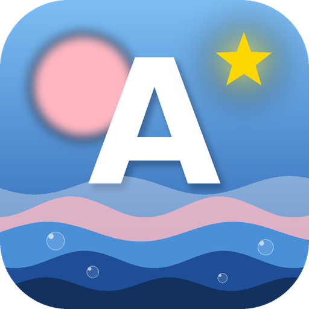

AdriaFlix 🌊
Seu streaming favorito, do jeitinho da Ponyo 🌊 — Filmes clássicos, séries e documentários em domínio público.
⭐ Instalar no Stremio 📋 Abrir manifest.jsonhttps://klyzmusic-blip.github.io/adriaflix/manifest.json
O que tem aqui
- 🎬 Filmes Clássicos — 39 filmes
- 📺 Séries & Desenhos Clássicos — 30 séries
- 📚 Documentários — 30 filmes